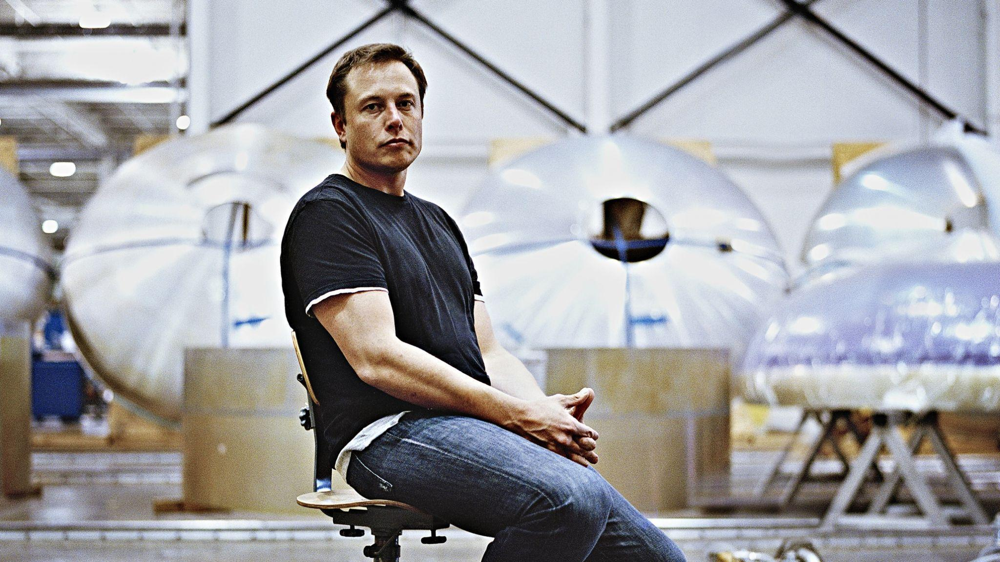

Model 3 et Model S : rappel d’un demi million de véhicules pour des problèmes de sécurité
La National Highway Traffic Safety Administration (NHTSA), l’agence américaine de sécurité automobile, a mis en évidence plusieurs problèmes techniques sur les Model 3 et Model S. Tesla a donc lancé un rappel de plus de 475 000 véhicules.
C’est un rappel de grandeur envergure pour une marque comme Tesla : 475 000 véhicules sont rappelés. Pour donner un ordre de comparaison, Tesla a produit 509 737 voitures électriques en 2020.
Autant vous le dire directement, si vous avez acheté une Model 3 en 2021, votre véhicule n’est pas concerné par ce rappel. Le rappel ne concerne, pour le moment, que le marché américain et plus précisément la Tesla Model 3 vendue entre 2017 et 2020, ainsi que la Model S vendue entre 2017 et 2020.
Elon Musk assure que SpaceX emmènera l’Homme sur Mars d’ici 10 ans
Le premier vol pour Mars aura lieu d’ici 10 ans. C’est la promesse faite par Elon Musk, le patron de SpaceX. Et encore, c’est une estimation haute. Pour aller sur la planète rouge, « au mieux, cela prendra 5 ans. Au pire, 10 ans », a indiqué le milliardaire durant le podcast de Lex Fridman relayé par Phonandroid.
Elon Musk a vanté les qualités de sa fusée Starship qui doit permettre une telle aventure. « Starship est la fusée la plus complexe et la plus avancée qui ait jamais été fabriquée », a souligné le patron de SpaceX. Et d’ajouter : « C’est beaucoup. C’est vraiment un tout autre niveau. » Il faut admettre que le projet Starship a donné satisfaction après un atterrissage réussi en mai dernier. Une douzaine de vols doivent maintenant se dérouler en 2022.
Elon Musk, homme le plus riche et de loin: qui sont les plus grandes fortunes du monde?
Les 10 personnes les plus riches du monde ont ajouté, au total, 402 milliards de dollars à leur fortune déjà conséquente au cours de l'année 2021, ressort-il dimanche de l'indice Bloomberg Billionaires.
Elon Musk, élu personnalité de l'année par le magazine Time, se retrouve en tête du classement, avec 277 milliards de dollars au 1er janvier 2022 et un gain de 121 milliards pendant l'année écoulée. Le fondateur de Tesla a moins gagné qu'en 2020 (140 milliards de dollars), mais cela a tout de même suffi pour faire de lui l'homme le plus riche de la planète. Et de loin. Derrière lui se trouvent Jeff Bezos et ses 190 milliards de dollars. Le fondateur et ex-PDG d'Amazon a gagné 4,5 milliards de dollars en 2021. C'est le Français Bernard Arnault qui ferme le podium avec 176 milliards de dollars, dont 61 milliards gagnés en 2021. Il s'agit du seul représentant dans le top 10 qui ne soit pas originaire des Etats-Unis.
Parmi d'autres personnalités notables se trouvent le créateur de Facebook, Mark Zuckerberg (128 milliards de dollars, +25 milliards en 2021), le père de Microsoft, Bill Gates (139 milliards, +7 milliards) et les co-fondateurs de Google, Larry Page (130 milliards, +47 milliards) et Sergey Brin (125 milliards, +45 milliards).
Tesla Cybertruck : date de sortie, prix, autonomie, gamme, tout savoir sur le pick-up futuriste
Le Tesla Cybertruck est un véhicule assez atypique, au design encore jamais vu sur le marché. On sait que celui-ci utilisera le même alliage que les fusées de SpaceX, et il sera même possible de faire chauffer l’acier du véhicule pour obtenir différentes couleurs.
Le Cybertruck devrait parfaitement convenir à ceux qui aiment les voyages, puisque celui-ci pourra alimenter une caravane. Au niveau des finitions à l’intérieur, l’habitacle devrait beaucoup ressembler à celui des nouvelles Tesla Model S et X.
SpaceX établit un nouveau record d’utilisation avec la Falcon 9
Le 9 mai, SpaceX a utilisé une dixième fois le même premier étage d’une fusée Falcon 9. Un record.
Mission accomplie pour SpaceX. Mission doublement accomplie, même. Non seulement l’entreprise américaine est parvenue ce week-end à acheminer une fois encore 60 nouveaux satellites en orbite pour étoffer sa constellation Starlink, dans le cadre de son projet d’accès à Internet par l’espace, mais en plus elle a réussi à utiliser un même premier étage de sa fusée Falcon 9 pour dix missions.
Ce premier étage a en effet bouclé, le 9 mai, sont dixième aller-retour entre la Terre et l’espace. Avant ce vol, il avait déjà servi à six missions Starlink (son réseau compte plus de 1 500 satellites autour de la Terre), pour les missions Radarsat et SXM-7, ainsi que pour le vol de démonstration Crew Dragon Demo-1. Avec la vol de ce week-end, le compte est bon : cela fait bien dix.
Elon Musk partage sa vision sur Mars, le Dogecoin (DOGE) et le bitcoin (BTC)
Lors d’une récente interview, Elon Musk, PDG de Tesla et de Space X, a partagé ses dernières réflexions sur la cryptomonnaie en général et notamment sur le Dogecoin et le bitcoin. Ses commentaires proviennent de l’épisode 252 du podcast Lex Fridman. Dans cet article vous trouverez quelques points marquants des commentaires de Musk lors de cet entretien pertinent.
Fridman et Musk ont commencé l’interview en parlant de la planète Mars. Malgré le tweet de Musk selon lequel la cryptomonnaie idéale pour Mars est le Dogecoin, Mars doit, selon lui, avoir sa propre cryptomonnaie complètement indépendante de la Terre :
« Nous devons avoir une devise différente parce que vous ne pouvez pas vous synchroniser à cause de la vitesse de la lumière, pas facilement du moins… Parce que pour Mars… l’approche la plus rapide est à environ quatre minutes-lumière et la prochaine approche est à peu près à 20 minutes-lumière, peut-être un peu plus. »
« Donc, vous ne pouvez pas vraiment synchroniser quelque chose, vous savez, si vous avez un problème de vitesse de la lumière de 20 minutes. S’il y a une blockchain d’une minute, elle ne se synchronisera pas correctement. Donc, je ne sais pas si Mars aura sa propre cryptomonnaie mais c’est quelque chose de probable. Ce serait une monnaie numérique localisée sur Mars. »